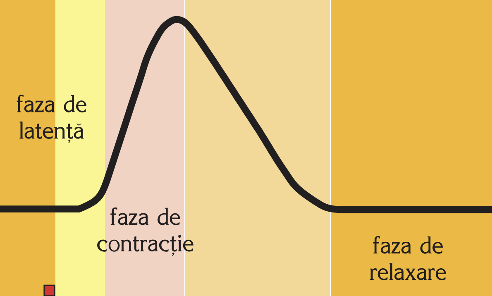
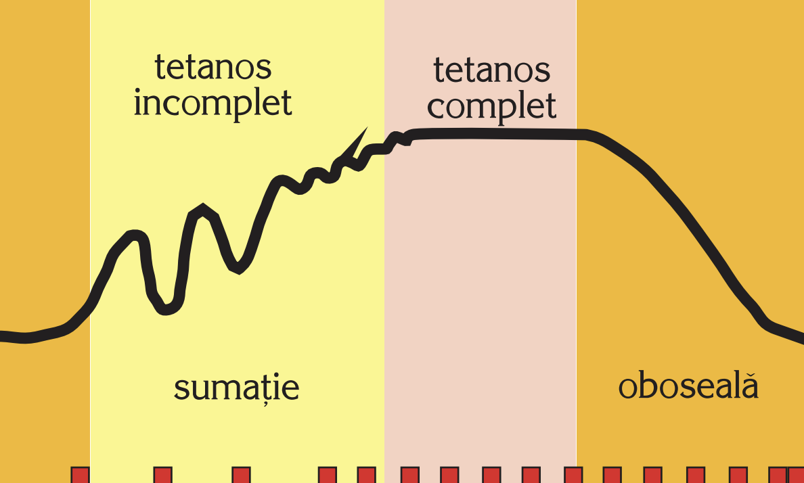

Sunt reprezentate de potențialul de acțiune al fibrei musculare. Stimularea fibrelor musculare pe cale naturală (de la placa motorie) sau artificială (cu curent electric) provoacă apariția unui potențial de acțiune propagat în lungul fibrei cu o viteză de 30 m/s. Potențialele de acțiune ale unei unități motorii se sumează, dând potențialele de placă motorie. Activitatea electrică a întregului mușchi sau a unităților motorii componente poate fi înregistrată, obținându-se electromiograma.
Sunt inițiate prin mecanismul de cuplare excitație-contracție. Procesele chimice din mușchi asigură energia necesară proceselor mecanice. Metabolismul muscular este anaerob în primele 45–90 de secunde ale unui efort moderat sau intens, timp necesar aparatului cardiovascular să regleze aportul de oxigen. După primele 2 minute de efort, necesitățile energetice sunt satisfăcute în cea mai mare parte aerob.
Se studiază cu ajutorul miografului. Aplicarea unui stimul unic, cu valoare prag, determină o contracție musculară unică, numită secusă musculară, care are următoarele componente:
A. Faza de latență: durează din momentul aplicării excitantului și până la apariția contracției. În timpul acestei faze are loc manifestarea electrică a contracției, a cărei durată depinde de tipul de mușchi, fiind de aproximativ 0,01 s la mușchiul striat.
B. Faza de contracție: durează în medie 0,04 s.
C. Faza de relaxare: durează 0,05 s.
 Secusa poate fi izometrică sau izotonică. Durata totală a secusei este de 0,1 s, iar amplitudinea ei variază proporțional cu intensitatea stimulului aplicat, până la o valoare maximă. Acest fapt se explică prin antrenarea în contracție a unui număr tot mai mare de fibre musculare, pe măsură ce intensitatea stimulului crește.
Secusa poate fi izometrică sau izotonică. Durata totală a secusei este de 0,1 s, iar amplitudinea ei variază proporțional cu intensitatea stimulului aplicat, până la o valoare maximă. Acest fapt se explică prin antrenarea în contracție a unui număr tot mai mare de fibre musculare, pe măsură ce intensitatea stimulului crește.
Dacă, în loc de stimulare unică, se folosesc stimuli repetitivi, la intervale mici și regulate, curba rezultată nu mai este o secusă, ci o sumație de secuse numită tetanos (contracție tetanică):
A. Tetanos incomplet, al cărui grafic prezintă un platou dințat, exprimând sumarea incompletă a secuselor la stimularea repetitivă cu frecvență joasă de 10–20 stimuli/secundă.
B. Tetanos complet, al cărui grafic prezintă un platou regulat, exprimând sumația totală a secuselor, obținută prin aplicarea stimulilor cu o frecvență mult mai mare: 50–100 stimuli/secundă. Toate contracțiile voluntare ale mușchilor din organism sunt tetanosuri și nu secuse, deoarece comanda voluntară se transmite la mușchi prin impulsuri cu frecvență mare. Există însă în organism și situații în care contracția este o secusă: frisonul, sistola cardiacă, contracția obținută în urma reflexului miotatic.
Ale contracției se datorează fenomenelor biochimice din fibra musculară. Randamentul contracției masei musculare este de 30%, ceea ce înseamnă că 70% din energia chimică se transformă în energie calorică.